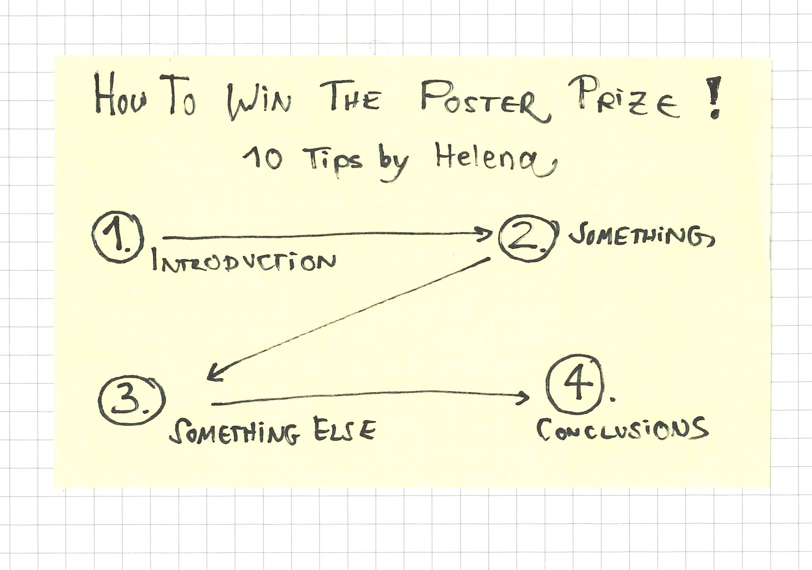
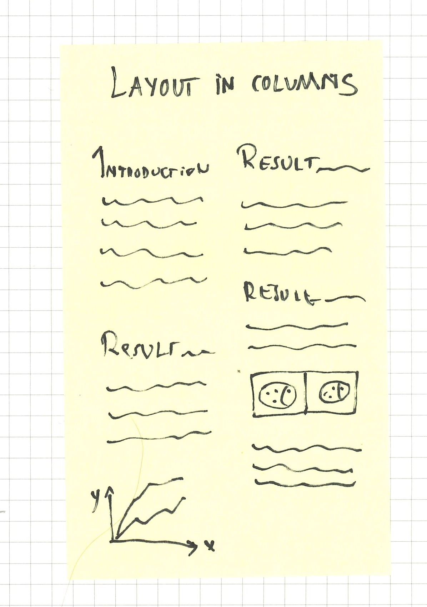
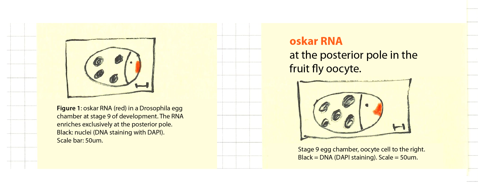
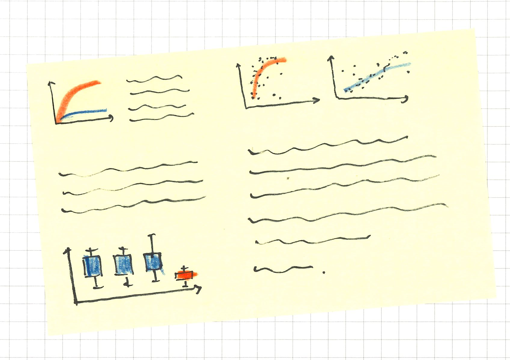

Win the Poster Prize (Or, at least, produce nice posters while trying)
Students on average author 1-3 papers and produce at least three times that many conference posters (see our study). At large meetings, such as the ASCB, thousands of posters are presented each year. While presenting posters is popular, posters sessions evoke mixed feelings: they are often late in the evening, interrupted by special workshops, held in badly lit rooms far away from the bar, and many posters are subpar: they are crammed with details and text in small font, and presenters elaborate in great detail. Experienced conference attendees therefore excel in the brief scanning of the title while avoiding eye contact with the presenter for fear of being entangled in a never-ending run-down of experimental details.
While we can’t influence the conference organization, we can absolutely and with little effort improve the posters! Based on my survey data, I compiled the top ten tips to improve your poster:
Legible title
Make the title and your name readable from afar. This means, not too many words per title, maybe 6 to 10, in a legible font – Helvetica Neue, Verdana, Calibri or similar. Refrain also from ALL CAPS as it becomes hard to read after a few words. If you love all caps, why not try Small Caps with capitalization instead.
Avoid abbreviations
Ideally no abbreviations in the title and as few as possible in the poster content. Only few abbreviations are so common that they became words themselves: DNA, RNA, some gene and protein names. You don’t want to turn audience away with jargon, and remember, even specialist’s conferences are attended by editors, journalists, and newcomers in the field – be welcoming to them all!
Not too much text
We read maximally 100-200 words per minute – but in posters, with scientific data, terms, and charts our reading speed will be significantly decreased. Keep that in mind – I personally am more convinced by a figure than by you explaining and interpreting it.
Clear section layout
Start at the top left and end at the bottom right. This is how we read text, and also posters! Alternative: arrange your content in 2-3 columns, similar to an article – make sure the columns are clear by leaving enough white space surrounding them! Please refrain from unconventional layouts – the chances are high that it will confuse your readers!
 
Organization and layout is key: commit to one reading direction and then stick to either column or row layout.
Figure titles instead of legends
This is easy – try moving the figure legend above the image/chart, instead of showing it below as you would in a paper. Right away, this gives you a header for that section! Explanations of the color code, which are critical to understand a figure, can be sub-headers!

Increase legibility with figure titles instead of figure legends!
Consistent color code
Absolutely keep the color code consistent across all figures! Nothing kills more time than figuring out the color code of each individual chart! Please, if your main experiment/mutant/condition is shown in “red” in the first figure, do not deviate from this in the next figure! And, of course, be color-blind friendly (no mixing red and green!)

Pick a consistent color scheme. Experiment in red, control in blue? Do not use these colors for anything else.
Simple pictures and charts.
There is likely fascinating detail in your data, but not everyone wants to know all of it during a poster session. Therefore, please consider removing unnecessary details from your graphs! (Also: avoid 3D, no bar charts for distributions (#BarBarCharts) and avoid unconventional graph-types: it’s already unlikely people understand them in a paper, and less likely they feel like deciphering them in a poster session.
Poster-Etiquette: Have the elevator pitch ready!
Give your audience a polite overview in 2-3 minutes that includes the big picture and key finding, but leave out experimental details. If they are interested in more, they will ask! (Also, it is convenient to have this 2-minute blurb ready in case you accidentally bump into the heroine/hero of your field in the coffee line, instead of at the poster session!)
Rehearse whenever you can!
Find 10 volunteers, not necessarily your supervisor only, to test out your 2-minute presentation; while in the lunch line, when waiting for a measurement to finish, or when cleaning the bench.
Tricks are allowed.
To get people interested in your poster, you can use tricks. Have handouts ready to take home, bring a laptop to show movies, I’ve seen people hand out sweets, and know someone that served beers – everything is allowed when trying to convince people to read your poster!
Further reading:
A really nice paper on how to give a poster presentation is here: “Producing punchy posters” by Bernard S. Brown, in Trends in Cell biology, Vol. 6, 1996. He mainly deals with text, and less with figures, but has been helpful for me for 20 years! link to article